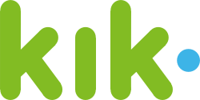
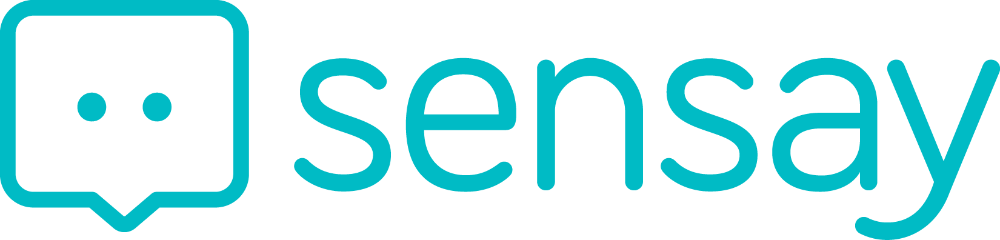
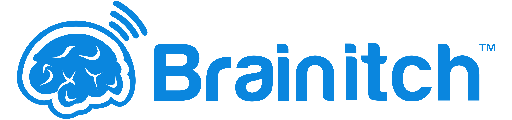
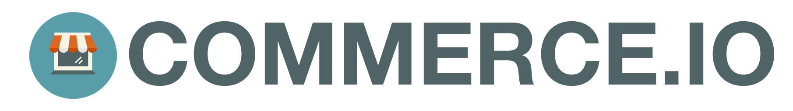
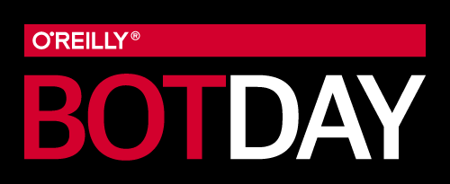
 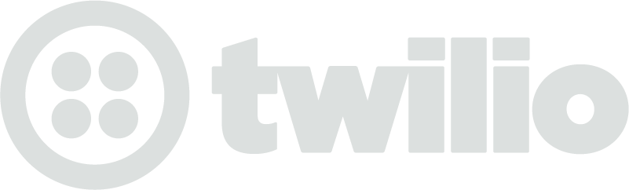
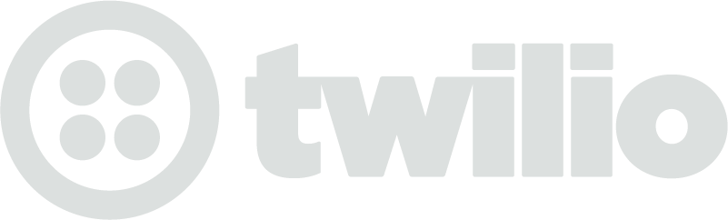
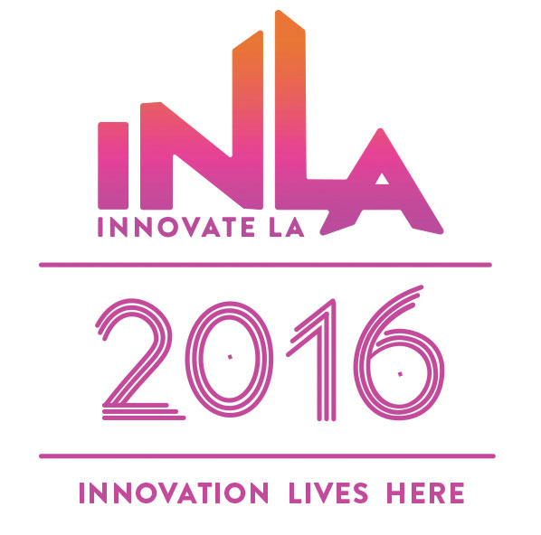
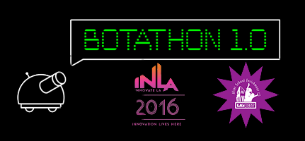
Bots have become the latest paradigm for content distribution and e-commerce on messaging platforms. Some say that bots are the new apps. The purpose of this two day Botathon, a hackathon for building bots, is to educate, inspire collaboration and team building, and to develop innovative use cases within a conversational interface.
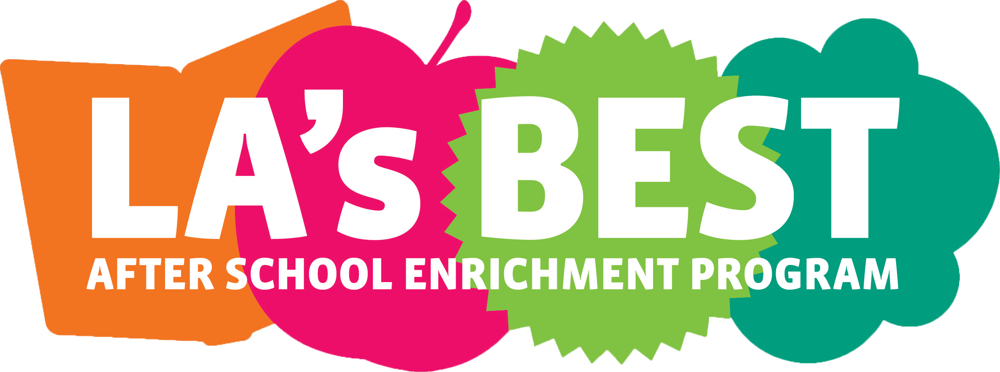
LA's BEST provides an enriching after school program to 25,000 kids each school day at 193 elementary schools across Los Angeles with the highest needs and fewest resources in economically distressed neighborhoods.
Their programming goes beyond basic education to instill healthy values and to build skill sets in fields such as digital learning, science and the arts. LA's BEST students are more likely to stay in school and graduate high school.
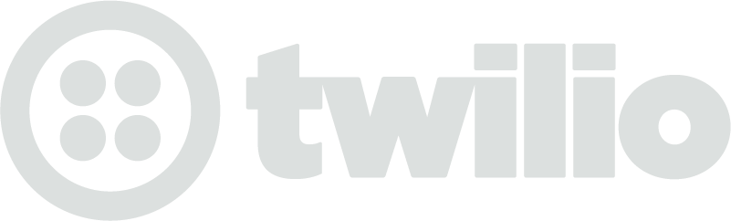
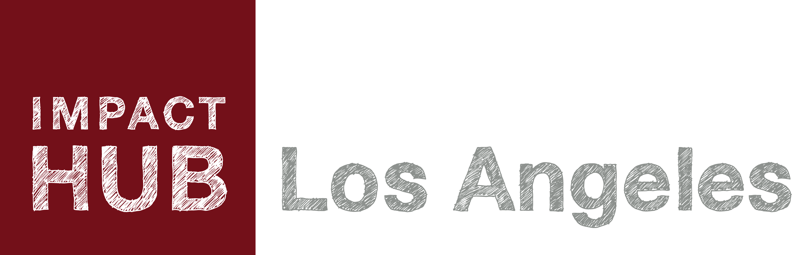
Address: 830 Traction Ave #3a, Los Angeles, CA 90013
Impact Hub Los Angeles is a community hub/incubator with nearly 300 members made up of socially conscious professionals, entrepreneurs, civic leaders, non-profit leaders, consultants and artists all working on addressing the most critical issues facing the society. Our network includes over 11,000 members in 85 Impact Hubs spread across five continents.